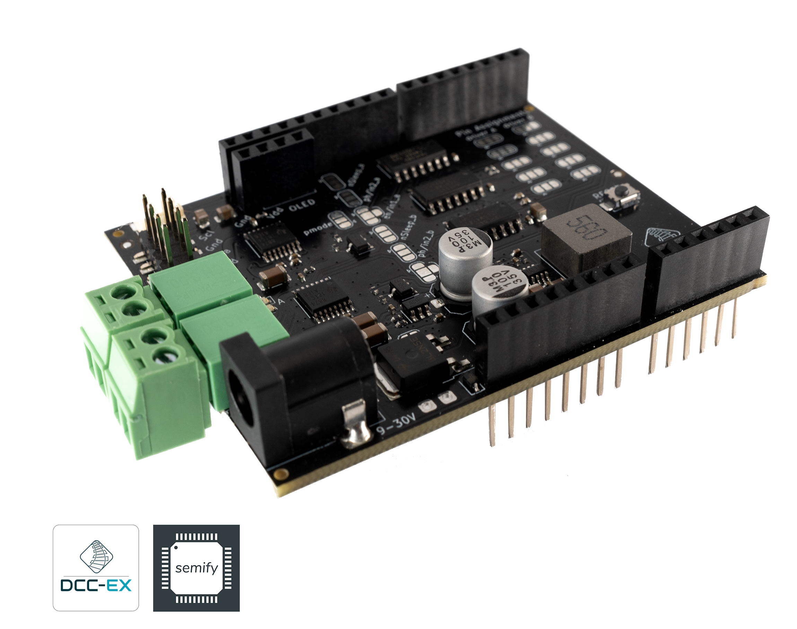
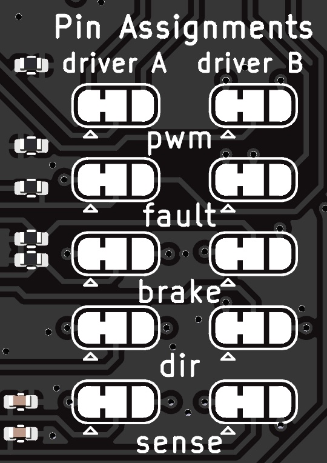
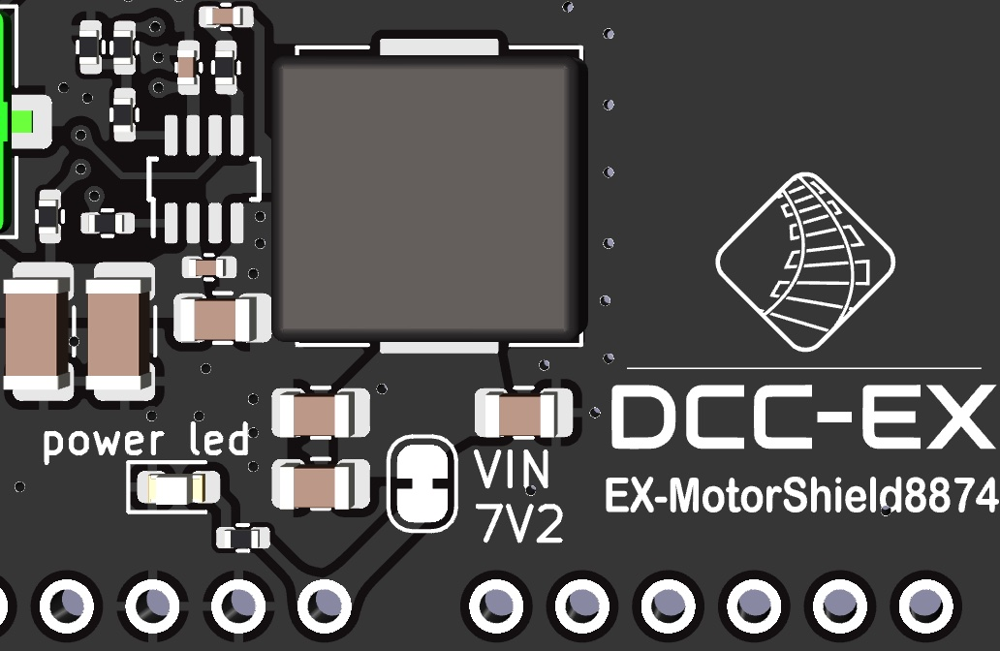
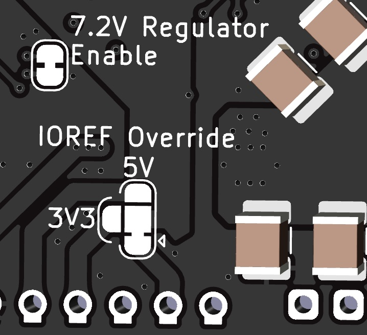

DCC-EX EX-MotorShield8874 RevA


Note
This board is compatible with TrackManager DC mode.
Designed in conjunction with the DCC-EX development team, the EX‑MotorShield8874 is extremely simple to use with all current and future generations of EX‑CommandStation hardware.
It also safely powers the Command Station motherboard via the same single barrel jack DC input voltage that powers the track. It is rated at a very generous peak 5A of load per channel using Texas Instruments DRV8874 MOSFET technology. This board is the new standard by which we compare other boards.

Fig 137: DCC-EX EX-MotorShield8874 RevA Semify

Fig 138: DCC-EX EX-MotorShield8874 RevA Millennium Engineering
What Is It?
The EX-Motorshield8874 is pin compatible with the original Arduino Motor Shield Rev3 but provides significantly improved electrical performance for driving higher loads, and improved usability.
Rated for 5 Amps of continuous output current
No need to cut traces or bend out pins for stacking on the EX-CommandStation
2 outputs (Main and Programming Track or 2 Mains)
Single power supply input powers the shield, the Arduino, and the track (motor output)!
5V and 3.3V compatible
Virtually no voltage drop, even at high currents
I2C header and STEMMA Qwiic connector for accessories (displays, port expanders, servo boards, etc.)
Reverse polarity protection
Fault detection in addition to overcurrent reporting for extra safety
Alternative power in and out solder pads for different connector types
Stackable (Support multiple Power Districts)
Optional OLED header to connect a display directly to the shield
The EX‑MotorShield8874 is based on two DRV8874 H-bridge motor drivers with integrated current sensing from Texas Instruments (TI). It is used to drive inductive loads like relays, solenoids, DC and stepping motors, as well as provide the DCC signal and power to the model railroad tracks.
Powering of Arduino boards is possible due to the on board DC/DC buck converter, supporting a wide input supply range from 9 to 30V. The reverse polarity protection prevents damage to the circuit and its components in case the power supply is accidentally connected backwards.
The board’s 5V and 3V3 friendly design makes it suitable for a broad range of Arduino compatible platforms, with an override that compensates for designs with incomplete support (such as an incorrect IORef voltage).
This Shield features a status LED for supply, which provides a visual indication of the power supply status in addition to LEDs to show each side of the A and B power outputs.
Why did we make it?
EX‑MotorShield8874 is specifically designed for use with DCC-EX Command Station for controlling model railroads, but can also be used as generally better replacement for Arduino Motor Shield R3 in any device that needs to control a motor. We needed higher current capacity to power more motors/trains and have little to no voltage drop due to advanced MOSFET driver technology.
Note
The EX‑MotorShield8874 was created through the gracious support and design facilities of Semify, who, along with DCC-EX, license it to manufacturers. The hardware design has been made open source for individual users and the schematics are available on the DCC-EX GitHub repository.
How can I get one?
Units may be purchased from the following sources:
Suppliers / Resellers List
In the United States serving USA, Canada, & Mexico

{kind=link}
{kind=link}
{kind=link}
In England serving the UK
{kind=link}
In Austria serving the European Union (EU)
{kind=link}
In Australia serving AU, NZ, and APAC
There are different options for the board such as fully assembled or in kit form where connectors and headers need to be soldered onto the board. Prices vary from around $34.95 to $39.90 in the US, to approximately £29.99 in the UK, €37 in Europe, and in Australia starting from $AU55.00. Prices typically do not include tax and shipping.
For quantities of 10 or less per annum, you may utilise a PCB manufacturing and assembly service such as JLCPCB without licensing fees. A donation to DCC-EX would be appreciated, so click the DONATE button! The production files are available on the DCC-EX GitHub.
Entrepreneurs wanting to use the design to offer commercial quantities to their local communities should contact Semify (service @ semify-eda.com) to arrange a bulk purchase or DCC-EX (support @ dcc-ex.com) for a license to manufacture. Licensing includes donating a royalty to DCC-EX per board sold.
Assembly with EX-MotorShield8874
Assembly with the EX‑MotorShield8874 is extremely simple, just plug the motor shield into your choice of Command Station motherboard. Unlike other motor shields, the EX-MotorShield8874 needs no jumpering, trace cutting, or pin bending! Just plug it in.
Shown here are examples of the shield plugged into Mega+WiFi, Nucleo-F411RE:

Fig 139: DCC-EX EX-MotorShield8874 RevA on Mega+WiFi

Fig 140: DCC-EX EX-MotorShield8874 RevA on Nucleo-F411RE
1. Connect DC Power to Motor Driver
The EX‑MotorShield8874 accepts a standard 2.1mm inside diameter DC barrel jack for DC power, with centre pin positive, and polarity protected for your safety. Acceptable voltages for correct DCC operation include 10-24VDC, but the shield can cope with 9-30VDC.

Fig 141: DCC-EX EX-MotorShield8874 on Mega+WiFi with power and track connectors
Note
DO NOT connect power to BOTH the EX-MotorShield8874 barrel jack and the underlying Arduino motherboard via its DC barrel jack as you may damage your Arduino and/or EX-MotorShield8874!!
The EX-MotorShield8874’s DC barrel jack is the only power source required to power both the tracks and the EX‑CommandStation into which it is plugged. It supplies carefully regulated 7.2V DC power to the underlying Arduino R3 compatible motherboard via the VIN pin. This voltage is safely regulated down from the track power input to ensure Command Station motherboards will stay cool and work well. There is no need to power the Command Station via its barrel jack, or USB power. It is safe, however, to connect the USB cable as it will not create a conflict.
Warning
These are common, but not universal, upper limits of what decoders will accept. You should check the manual of your decoders to confirm what they accept, and adjust the voltage down accordingly.
Applying a voltage above what a decoder was designed for may permanently damage it.
Because the EX-MotorShield8874 does not drop voltage like the standard L298 based motor shields we suggest:
10v-12vDC for Z scale
10v-14vDC for N scale
14v-16vDC for HO/OO scale
18v-19vDC for O scale
20v-24vDC for G scale
Note that good quality, fully-enclosed and double-insulated switch mode power supplies are best, and we suggest laptop power bricks as ideal in this role as they typically output 3-20A easily and safely.
Note
Please note that as the EX-MotorShield8874 can supply up to 5A of track power per channel, a power supply of more than 10A peak capacity is required to run both channels at full peak current and have power left for the Command Station.
Note
If you are just just testing your Arduino (not trying to power the track with the motor shield) some users have found that their PC USB ports have not been providing reliable power to the Arduino and have needed to plug the power supply into EX-MotorShield8874.
1. Turn on Power to the Motor Driver
Once satisfied the EX‑MotorShield8874 is seated properly on the Command Station motherboard, you can apply power to the EX‑CommandStation. You ought to see a green LED light up indicating power is being supplied to the motherboard.

Fig 142: DCC-EX EX-MotorShield8874 RevA on Mega+WiFi with power LED on
3. Connect Track to Motor Driver
Track power for A (MAIN) and B (PROG) tracks can be connected now using the green track connectors. These unplug conveniently to allow easy swapping in and out of the EX‑CommandStation. Make sure to tighten the screws onto the wire in the connectors before applying power.

Fig 143: DCC-EX EX-MotorShield8874 RevA connectors
There are two sets of output connectors on the motor shield, A and B. A is the Main or Operations (also called ‘Ops’) track while B is the Programming or Service track. Connect twisted pair wire of the proper gauge to each track.
Notice that A (MAIN) is on the left as you look at the connectors, and B (PROG) is on the right, next to the DC barrel jack.
Polarity (which wire is connected to which side of the track) is not not important here if you are using separate, completely isolated piece of track for PROG. However if you will be using a siding track that connects to your main track, make sure that the connections for both tracks match.
In other words, if you view one side of your main track as having a ‘left’ side and a ‘right’ side, and connect positive output A to the left side, connect the positive from the B side to the left side of the programming track. In electrical terms, we want both tracks to be “in phase” with each other. Here is the diagram from above repeated again for reference.
Next steps
See the Adding WiFi page to learn how to connect the WiFi shield to your EX‑CommandStation, or alternatively connect a controller like JMRI or our EX‑WebThrottle by using the serial cable to connect between your computer and the EX‑CommandStation as outlined in the Getting Ready section of the EX‑Installer page. Note that when configuring the EX-CommandStation you will want to select EX8874_SHIELD as the motor board during configuration.
Additional Information
Stacking EX-MotorShield8874s
This is definitely advanced Tinkerer/Engineer level work. Do not attempt it without some confidence you know what you are doing electronically. Future revisions of the EX-MotorShield8874 will look at alternative ways to expand the number of DCC districts.
This article covers both stacking an Arduino Motor Shield R3 (or clone) and an EX-MotorShield8874, and stacking two EX-MotorShield8874s.
Stacking an Arduino Motor Shield R3 and EX-MotorShield8874
This stack is perhaps simplest and an easy enough upgrade for those who already have an Arduino Motor Shield R3 or clone.
We are going to leave the Arduino Motor Shield R3 in the same configuration as recommended on the Initial Assembly page and as such it is worth doing this first and testing all is well before proceeding if this is a new install.
The best solution is to stack the EX-MotorShield8874 on top of the Arduino Motor Shield R3 (is it, really??) for which we will need to re-route some of its IO pins to allow it to function.
On the EX-MotorShield8874 you need to alter the Pin Assignment pads (NB: the following is fine for Mega and Nucleo/STM32 motherboards, but is not ideal for ESPDuino32 motherboards):
{kind=link}

Cut the PWM (EN) jumpers for both Driver A and Driver B, and solder bridge the right hand ALT pads
Cut the BRAKE jumpers for both Driver A and Driver B, and solder bridge the right hand ALT pads
Cut the DIR jumpers for both Driver A and Driver B, and solder bridge the right hand ALT pads
Cut the SENSE jumpers for both Driver A and Driver B, and solder bridge the right hand ALT pads
The above will re-allocate most of the pins used by the top board to the ALT or alternate set of pins  but note it leaves the FAULT pins routed to the default positions of A4/A5 as there is no conflict with the Arduino Motor Shield R3.
but note it leaves the FAULT pins routed to the default positions of A4/A5 as there is no conflict with the Arduino Motor Shield R3.
Add one of the following motor driver definitions to your config.h file (if uncertain, read this description first):
Find this section in the file:
// DEFINE MOTOR_SHIELD_TYPE BELOW ACCORDING TO THE FOLLOWING TABLE:
//
// STANDARD_MOTOR_SHIELD : Arduino Motor shield Rev3 based on the L298 with max 18V 2A per channel
// POLOLU_MOTOR_SHIELD : Pololu MC33926 Motor Driver (not recommended for prog track)
// FUNDUMOTO_SHIELD : Fundumoto Shield, no current sensing (not recommended, no short protection)
// FIREBOX_MK1 : The Firebox MK1
// FIREBOX_MK1S : The Firebox MK1S
// |
// +-----------------------
//
#define MOTOR_SHIELD_TYPE STANDARD_MOTOR_SHIELD
And for an Arduino UNO or Mega (or any 5v microcontroller) add the following:
// EX-MotorShield8874 stacked onto Arduino Motor Shield R3
// For Arduino UNO, Mega and any 5v microcontroller
#define MOTOR_SHIELD_TYPE EX8874_STACKED_ON_ARDUINO
#define EX8874_STACKED_ON_ARDUINO F("EX8874_STACKED_ON_ARDUINO"),\
new MotorDriver( 3, 12, UNUSED_PIN, 9, A0, 2.99, 1500, UNUSED_PIN), \
new MotorDriver(11, 13, UNUSED_PIN, 8, A1, 2.99, 1500, UNUSED_PIN), \
new MotorDriver( 2, 10, UNUSED_PIN, 7, A2, 5.08, 5000, A4), \
new MotorDriver( 5, 4, UNUSED_PIN, 6, A3, 5.08, 5000, A5)
Or for any 3v3 microcontroller such as STM32 Nucleo models, but not the ESPDuino32, add the following:
// EX-MotorShield8874 stacked onto Arduino Motor Shield R3
// For Nucleo/STM32 and any 3v3 microcontroller except ESP32
#define MOTOR_SHIELD_TYPE EX8874_STACKED_ON_ARDUINO
#define EX8874_STACKED_ON_ARDUINO F("EX8874_STACKED_ON_ARDUINO"),\
new MotorDriver( 3, 12, UNUSED_PIN, 9, A0, 0.488, 1500, UNUSED_PIN), \
new MotorDriver(11, 13, UNUSED_PIN, 8, A1, 0.488, 1500, UNUSED_PIN), \
new MotorDriver( 2, 10, UNUSED_PIN, 7, A2, 1.27, 5000, A4), \
new MotorDriver( 5, 4, UNUSED_PIN, 6, A3, 1.27, 5000, A5)
Stacking Two EX-MotorShield8874s
The easiest way forward is to leave the first EX-MotorShield8874 in the stack entirely unmodified. Note that if you are using an Ethernet shield, it must be the very first board in the stack, with the unmodified EX-MotorShield8874 next immediately on top of that. As such, this too it likely worth testing first before proceeding to modifying the second EX-MotorShield8874 and adding it on.
The top EX-MotorShield8874 must have its onboard 7.2V regulators disconnected from the VIN pin at least, and preferably also disabled to save a little power consumption and lower the RF noise. It also needs to have all of its IO pins used to communicate with the EX‑CommandStation re-routed to alternate pins and an additional motor driver entry created in config.h
The documentation has the jumpers described on GitHub
But to be VERY clear, you must CUT the regulator to VIN pin on the top of the PCB which is not labelled on the original version, but has been labelled on later versions:
{kind=link}

Then you should also cut the “Regulator Enable” trace on the bottom of the board:
{kind=link}

On the top board you then need to alter the Pin Assignment pads (NB: this is for Mega and Nucleo/STM32 motherboards, but is not ideal for ESPDuino32 motherboards):
Cut the PWM (EN) jumpers for both Driver A and Driver B, and solder bridge the right hand ALT pads
Cut the FAULT jumpers for both Driver A and Driver B but do NOT solder the right hand ALT pads (explanation below)
Cut the BRAKE jumpers for both Driver A and Driver B, and solder bridge the right hand ALT pads
Cut the DIR jumpers for both Driver A and Driver B, and solder bridge the right hand ALT pads
Cut the SENSE jumpers for both Driver A and Driver B, and solder bridge the right hand ALT pads
The above will re-allocate the pins used by the top board to the ALT or alternate set of pins
The reason we did not solder the FAULT pins to their righthand ALT pads is that this would connect the FAULT pins to D0/D1 on the Arduino R3 headers which is not ideal because D0/D1 typically carry the serial port. You can of course bend those pins out if you wish to use them, and simply jumper them that way.
If you do wish to use the solder method, solder a jumper wire (carefully!) to the centre pad of the FAULT which you can jumper to any available digital input pin on the motherboard you are using.
Add one of the following motor driver definitions to your config.h file (if uncertain, read this description first):
Find this section in the file:
// DEFINE MOTOR_SHIELD_TYPE BELOW ACCORDING TO THE FOLLOWING TABLE:
//
// STANDARD_MOTOR_SHIELD : Arduino Motor shield Rev3 based on the L298 with max 18V 2A per channel
// POLOLU_MOTOR_SHIELD : Pololu MC33926 Motor Driver (not recommended for prog track)
// FUNDUMOTO_SHIELD : Fundumoto Shield, no current sensing (not recommended, no short protection)
// FIREBOX_MK1 : The Firebox MK1
// FIREBOX_MK1S : The Firebox MK1S
// |
// +-----------------------
//
#define MOTOR_SHIELD_TYPE STANDARD_MOTOR_SHIELD
And for an Arduino UNO or Mega (or any 5v microcontroller) add the following:
// Dual stacked EX-MotorShield8874s
// For Arduino UNO, Mega and any 5v microcontroller
#define MOTOR_SHIELD_TYPE EX8874_DUAL_STACKED
#define EX8874_DUAL_STACKED F("EX8874_DUAL_STACKED"),\
new MotorDriver( 3, 12, UNUSED_PIN, 9, A0, 5.08, 5000, A4), \
new MotorDriver(11, 13, UNUSED_PIN, 8, A1, 5.08, 5000, A5), \
new MotorDriver( 2, 10, UNUSED_PIN, 7, A2, 5.08, 5000, YOUR_PIN_A), \
new MotorDriver( 5, 4, UNUSED_PIN, 6, A3, 5.08, 5000, YOUR_PIN_B)
Or for any 3v3 microcontroller such as STM32 Nucleo models, but not the ESPDuino32, add the following:
// Dual stacked EX-MotorShield8874s
// For Nucleo/STM32 and any 3v3 microcontroller except ESP32
#define MOTOR_SHIELD_TYPE EX8874_DUAL_STACKED
#define EX8874_DUAL_STACKED F("EX8874_DUAL_STACKED"),\
new MotorDriver( 3, 12, UNUSED_PIN, 9, A0, 1.27, 5000, A4), \
new MotorDriver(11, 13, UNUSED_PIN, 8, A1, 1.27, 5000, A5), \
new MotorDriver( 2, 10, UNUSED_PIN, 7, A2, 1.27, 5000, YOUR_PIN_A), \
new MotorDriver( 5, 4, UNUSED_PIN, 6, A3, 1.27, 5000, YOUR_PIN_B)
Where YOUR_PIN_A and YOUR_PIN_B are the pins you have jumpered to the Sense pins for channel A and B respectively on the top EX-MotorShield8874.
Note that on Nucleo-144 motherboards, D7 and D8 are incapable of Pulse Width Modulation (PWM) for the Brake for channel B on either the first or second shield. PWM is used for DC PWM output and for managing DCC overload situations for the EX-MotorShield8874. As such it is recommended that the first board in the stack use the default Channel A BRAKE of D9, and the ALT Channel B BRAKE of D6.
Then on the top EX-MotorShield8874 set all pins except the BRAKE pins for Channel A and B to the ALT settings. For this to work you will also need to disable the Serial6 port as those appear on Arduino D0(PG9)/D1(PG14) which we will use for the ALT FAULT pins. Find the following line in DCCTimerSTM32.cpp and comment it out thusly:
//HardwareSerial Serial6(PG9, PG14); // Rx=PG9, Tx=PG14 -- USART6
The BRAKE pins both need to be isolated by cutting the default setting on the pads, and then solder jumpered to other PWM capable pins such as PE12 and PE14. This requires careful soldering of jumpers to the centre pad of the BRAKE jumper pads for both Channel A and B on the top EX-MotorShield8874. We suggest the use of male-male dupont jumpers where you cut one end off, strip the wires and tin with solder to attached to the centre pad. Then use the male dupont pin to connect to PE12/PE13. The motor driver configuration would then look like this:
// Dual stacked EX-MotorShield8874s
// For Nucleo-F429ZI/F439ZI
#define MOTOR_SHIELD_TYPE EX8874_DUAL_STACKED_ETH
#define EX8874_DUAL_STACKED_ETH F("EX8874_DUAL_STACKED_ETH"),\
new MotorDriver( 3, 12, UNUSED_PIN, 9, A0, 1.27, 5000, A4), \
new MotorDriver(11, 13, UNUSED_PIN, 6, A1, 1.27, 5000, A5), \
new MotorDriver( 2, 10, UNUSED_PIN, 7, A2, 1.27, 5000, YOUR_PIN_A), \
new MotorDriver( 5, 4, UNUSED_PIN, 6, A3, 1.27, 5000, YOUR_PIN_B)
For more detailed and technical information, follow the link to the EX-MotorShield8874 on Github It also includes the schematic and the KiCad project files.
Testing TrackManager configuration and operation
There are some simple tests you can perform to confirm that the EX-MotorShield8874 is operating correctly once configured.
All of these tests require a serial connection to your EX‑CommandStation and use interactive commands to change the active configuration. If you’re unsure on how to connect via a serial connection, refer to Using a Serial Monitor
Note in the images below, Track A is the right hand green connector, and Track B is the left hand green connector.
Firstly, configure both Tracks as MAIN and turn track power on:
<= A MAIN>
<= B MAIN>
<1>
This should result in all four (4) yellow LEDs being lit:

Fig 144: Tracks A and B configured as MAIN with power on
Next, configure Track A as DC, turn power on again, and ensure that there is no throttle speed:
<A= A DC 1>
<1>
<t 1 0 1>
This should result in both Track B (left) LEDs being lit, but Track A (right) LEDs being off:

Fig 145: Track A DC, B MAIN, no throttle
Set throttle speed for Track A using DCC address 1:
<t 1 100 1>
This should result in both Track B (left) LEDs still being lit, and one Track A (right) LED being lit:

Fig 146: Track A DC, B MAIN, with forward throttle
Reverse the direction for Track A using DCC address 1:
<t 1 100 0>
This should result in both Track B (left) LEDs still being lit, and the opposite Track A (right) LED being lit:

Fig 147: Track A DC, B MAIN, with reverse throttle
Now configure Track B as DC with the same DCC address as Track A and power on:
<= B DC 1>
<1>
This should now result in one Track B (left) LED being lit, matching Track A’s (right) LED being lit:

Fig 148: Track A DC, B DC, with reverse throttle
Finally, change to the forward direction again:
<t 1 100 1>
This should now result in both Track B (left) and Track A (right) having the opposite LED being lit:

Fig 149: Track A DC, B DC, with forward throttle